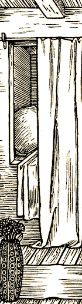

Introduction to Stages
A Stage is a location that has been built for StoryTellers to tell stories in. Stages are intended to offer interesting and intriguing backgrounds that will help StoryTellers to tell evocative stories. Skotos Tech initially plans to release a few Stages for StoryTellers in January 2001. These may include:
- A medieval inn
- An ocean liner
- A space station
Stages will include an entire setting and also some props which may be useful in that setting. (For example, the medieval inn might include plates, mugs, food, cooking implements back in the back, and livestock out in the yard.)
Beginning in mid-2001, the StoryBuilding Toolkit will be available to all Skotos members and StoryBuilders will be able to create their own Stages and add them to the Skotos Stages library – making them available to StoryTellers.
What is an Extended Stage?
A few extended Stages will include more extensive props and special rules systems. The initial extended Stages are all based upon role-playing games and will allow fans of those games to run their own adventures. They are:
- The Og Stage (late 2000)
- The Lovecraft Country Stage (early 2001)
- The Paranoia Stage (late 2001)
What Types of Stories Are Told in Stages?
StoryTellers can tell any stories they want in Stages. However, our experience is that a certain type of story works best in Stages. These are stories that involve characters in conflict; they are akin to Live Action Roleplaying (LARP) games and to evening Murder Mysteries. They tend to have a number of standard features.
Stages are constrained: in time, in space, and in people. The central idea behind a Stage is that it tells a short story in a limited amount of time. Stages could be as short as an evening or a weekend. Likewise, Stages uses a limited number of locales. Even if a Stage is set somewhere huge, the number of discreet locations tends to be minimal. This is because the central focus of Stages is on communication; you don't want people to get lost and be unable to find each other. Finally, Stages involve a limited number of people. Given that you need all of the players to be together at the same time, you can't have too huge of a cast. In addition, larger numbers of characters require an ever increasing number of StoryTellers. Small Stages involve 8-20 people; large stages involve 50-100.
Stages are centered on characters. They're what make everything go. Each character tends to have 3-6 goals. A character's goals are often in conflict with each other, forcing him to make hard decisions. Different characters frequently have goals that are in conflict as well. This is what really keeps a Stage moving. Characters tend to have preexisting connections with each other, which are quickly summarized by the StoryTeller; this gives characters reasons (and the ability) to begin interacting with each other. Finally, characters tend to have a few special abilities, such as the ability to force someone to reveal a goal or to steal an item or to force someone to answer one question truthfully or to banish someone from a locale.
Stages features props. Usually, every character has one or two physical items: a sword, a treasure map, an incriminating photo, etc. They're sometimes linked to a character's special abilities and may be tradeable or stealable. They're very frequently linked to goals: ie, find the Maltese Falcon or discover who you sister is (with her identity being revealed in a photo). Some props may be introduced in the middle of the game by a StoryTeller.
Stages sometimes feature events. In many cases, StoryTellers just put things in motion and then sit back, answering questions and Hosting major StoryTellers characters. However, in some instances StoryTellers introduce events mid-game. These may help move the story along or add interesting twists.
Stages feature a few global goals. Every character is going to be able to determine the success of his own goals, but that doesn't make for very satisfying stories. There's no real climax, nothing that draws everyone together. Global goals -- which are shared by many people in the game -- resolve this problem. Many Stages include just a pair of opposed global goals, such as "overthrow the corrupt rulership of the city" and "protect the beneficent rulership of the city". Some feature a number of global goals, all related, such as "elect [your favorite politician] as president." There tend to be real, numerical ways to assess whether these goals are accomplished. Everyone may have military forces which they can lend toward protecting/overthrowing the rulership; or everyone has votes. However, a StoryTeller also needs to stay on his toes, accounting for innovative things that players may do in games -- such as throwing open the city gates to the Huns or bribing the ballot box counter. When a Stage is drawing to an end, then the StoryTeller will be able to assess everything related to the global goals and come up with some global results.
|

|